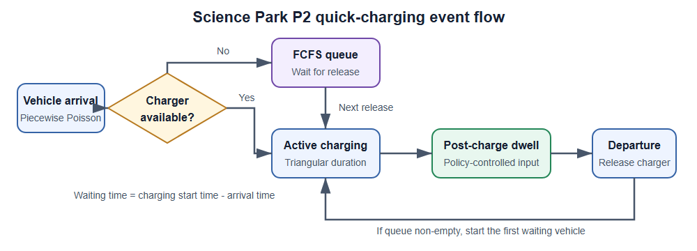

Reducing Waiting at Science Park P2 EV Quick Chargers
A discrete-event simulation study of capacity and charge-and-go policies
| Ngan Yuk Kuen | 1155212758 |
| Jundong Mei | 1155174217 |
| Zhiyuan Han | 1155176066 |
1. System and Decision Problem
Science Park Car Park P2 provides public electric-vehicle charging. The September 2026 Environmental Protection Department (EPD) database lists 26 quick chargers and one medium charger at P2. This project studies only the 26 quick chargers because combining charger classes would require power, connector and customer-choice data that are not publicly available.
An EV starts immediately if a charger is free or joins one pooled first-come, first-served queue. The charger remains occupied during active charging and post-charging dwell. The boundary excludes general parking allocation, compatibility, abandonment, reservations, failures, prices and grid constraints.
